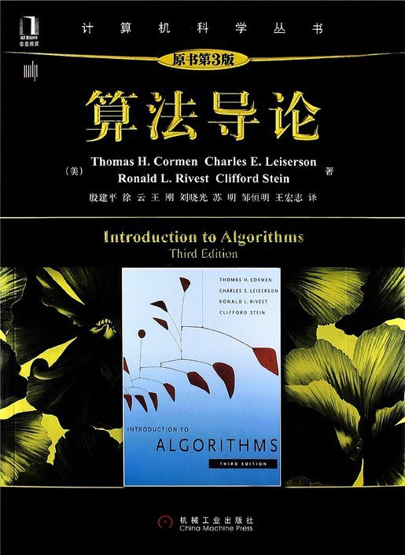

|  |
算法导论
作者：托马斯·科尔曼、查尔斯·雷瑟尔森、罗纳德·李维斯特、克利福德·斯坦 图书深入浅出，全面地介绍了计算机算法。对每一个算法的分析既易于理解又十分有趣，并保持了数学严谨性。本书的设计目标全面，适用于多种用途。涵盖的内容有：算法在计算中的作用，概率分析和随机算法的介绍。图书专门讨论了线性规划，介绍了动态规划的两个应用，随机化和线性规划技术的近似算法等，还有有关递归求解、快速排序中用到的划分方法与期望线性时间顺序统计算法，以及对贪心算法元素的讨论。图书还介绍了对强连通子图算法正确性的证明，对哈密顿回路和子集求和问题的NP完全性的证明等内容。全书提供了900多个练习题和思考题以及叙述较为详细的实例研究。 |